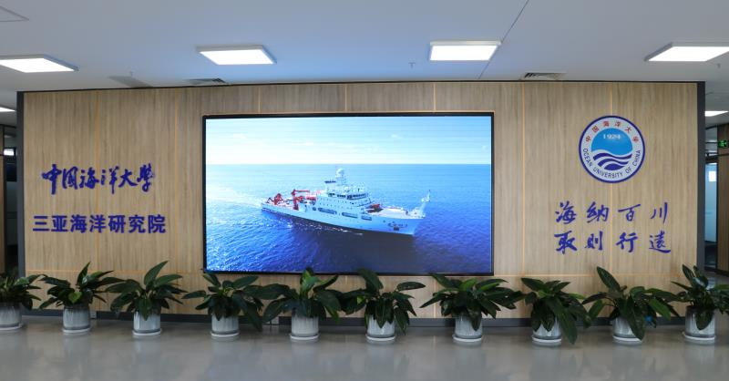
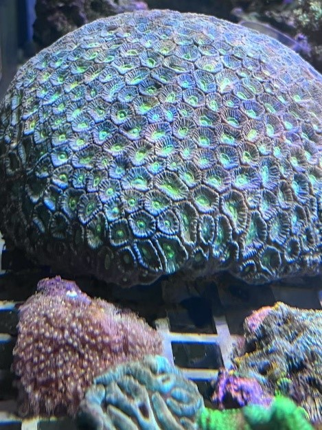
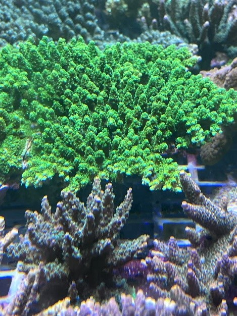
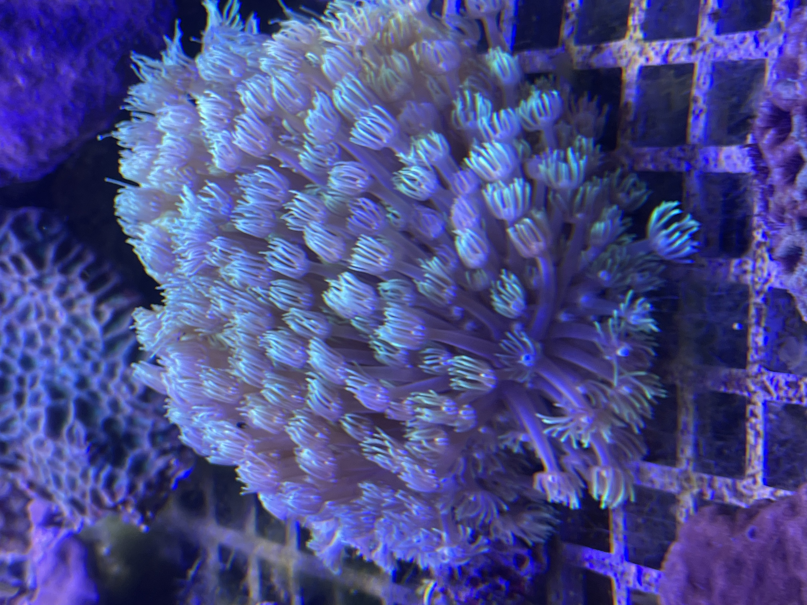

Sanya Coral Germplasm Center
The Sanya Coral Germplasm Center is a shared resource platform jointly built by the Sanya Ocean Laboratory and the Ocean University of China. It collects coral samples from the South China Sea, builds a living coral collection, a coral germplasm bank, and a zooxanthellae germplasm bank, and currently preserves more than 150 coral species.





Germplasm Repository Development
The Sanya Coral Germplasm Center collects coral samples from across the South China Sea to build a living coral collection. Zooxanthellae are isolated and purified from these samples to establish long-term culture systems, study cryopreservation methods, and build a zooxanthellae germplasm bank. Coral germplasm, zooxanthellae strains, and related ecological and environmental datasets are integrated into a comprehensive repository with an accompanying information management system.
Affiliated Institutions
The Coral Germplasm Center is affiliated with the Sanya Institute of Oceanography at Ocean University of China and the Sanya Ocean Laboratory.
The Sanya Institute of Oceanography is a key part of Ocean University of China’s efforts to build a world-class institution. Centered on “deep sea” and “tropics,” it focuses on national strategies and the unique features of Hainan, advancing a co-built, co-shared, and co-beneficial model that integrates government policy support, enterprise innovation, and Hainan’s geographic advantages to create a leading platform for talent, research, technology transfer, and marine culture.
The Sanya Ocean Laboratory is a new provincial research institute dedicated to marine science innovation and talent development, accelerating breakthroughs in ocean technology.